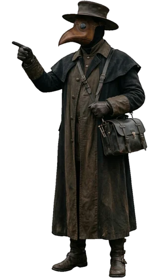

Início › Glossário histórico e científico
Glossário histórico e científico
Pesquise termos usados no site e filtre por categoria.
Carregando glossário…

Início › Glossário histórico e científico
Pesquise termos usados no site e filtre por categoria.
Carregando glossário…